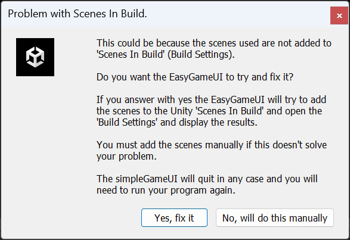

EasyGameUI / Getting Started
The core files of the EasyGameUI are located in the Assets/Playniax/Framework/EasyGameUI folder.The EasyGameUI provides three generic themes, which can be located in the Assets/Playniax/Framework/EasyGameUI/Scenes folder.
Other themes can be located in the Assets/Playniax/EasyGameUI (Themes) folder but depend on whether you purchased additional themes.
Additionally, a small test game is bundled with the EasyGameUI, available in the Assets/Playniax/Framework/EasyGameUI (Test Game) folder.
To integrate the EasyGameUI into your game, ensure that one of the provided themes is set as the initial scene to start, as EasyGameUI needs to run in the background seamlessly.
For reference, I suggest opening the file Assets/Playniax/Framework/EasyGameUI/Scenes/Minimalistic.
Now, navigate to the Hierarchy window and click on the EasyGameUI object.
This action will display the EasyGameUI in the Inspector window.
Main Settings
The EasyGameUI interface is organized into four sections: Main Settings, Advanced Settings, Editor Simulation Keys and Folder Filter.Let's start discussing the Main Settings.

Mode can be set to Use Use Background Scene or Use Game As Background:
When Mode is set to Use Background Scene, the SimpleGameUI will load the scene specified with the Background Scene Name property and run in the background
The EasyGameUI loads a scene called Background Scene by default:

Background Scene is located in the Assets/Playniax/Framework/EasyGameUI/Scenes folder.
A background scene typically serves as a title screen backdrop behind the game's user interface.
It's advised to make a copy of Background Scene and use the copy instead if you need to make changes.
When Mode is set to Use Game As Background, the SimpleGameUI will load the first scene specified with the Level Settings and run in the background.
Scenes to be loaded as levels for your game are specified with the Level Settings properties under Scene Name:

When specifying scenes, ensure to use their respective names.
There are 2 other properties worth mentioning:

When startPausedWhenGameIsUsedAsBackground is enabled, the level will start paused after loading.
And when DisableHomePageWhenGameIsUsedAsBackground is enabled, the EasyGameUI will ignore the Home screen, and the pause screen becomes the home screen.
As you may know, Unity's SceneManager requires scenes to be added to the Build Settings.
EasyGameUI will attempt to add all specified scenes to the Build Settings automatically when you launch the EasyGameUI for the Unity Editor but more about this later.
Under Player Settings, you can specify the total number of lives the player has and whether the game restarts after a Game Over or not.
During the game the lives counter is stored in PlayerData.Get(0).lives, where the zero indicates the player's index (0 = actually player 1, 1 = player 2, and so forth).
Advanced Settings
The most notable properties under Advanced Settings are Pre Level Settings, Post Level Settings, and Advertisement Settings:
Under Pre Level Settings, you can specify the scenes that need to be loaded before each level.
This can include elements such as an introductory sequence, a level map, or a shop, for example.
Under Post Level Settings, you can specify the scenes that need to be loaded after every level.
This could include elements such as transition screens, for example.
Under Advertisement Settings, you can specify the scenes where your advertisements will be displayed.
It's important to note that the EasyGameUI will not automatically continue loading when these scenes are displayed.
You will need to instruct the EasyGameUI when to exit the scene and load the next.
This can be achieved with a simple line of code:
if (EasyGameUI.instance) EasyGameUI.instance.ExitIntermission();
The simulator keys
The EasyGameUI comes with a few built-in keys to simulate events.Here are its keys along with their corresponding events:

Pressing the Left Shift key simultaneously with the G key will prompt SimpleGameUI to end the game and display the Game Over screen.
Similarly, pressing Left Shift with the N key will end the current level and load the next one.
To restart the game, press Left Shift along with the R key.
Lastly, pressing Left Shift together with the L key will either restart or reload the current level.
Build Settings Helper
As mentioned, Unity's SceneManager necessitates scenes to be included in the Build Settings for successful loading.Whenever you launch the EasyGameUI from the Unity Editor, it will automatically attempt to add all specified scenes to the Build Settings if they are not already included.
If scenes need to be added, you will receive a message notifying you of this action:

You can also manually initiate this process by selecting the Add Scenes To Build button located at the bottom of the EasyGameUI in the inspector panel:

It's important to note that EasyGameUI will search through the entire Unity project, which isn't always ideal.
Under Search In Folders, you can specify the folders:

Additionally, there is a helper button that can automatically set the folder of your current project:

And, for convenience, the EasyGameUI includes a button to open the Unity Build Settings window directly:

In conclusion, this tutorial has covered the essential aspects of setting up and utilizing EasyGameUI within your Unity project.
As you continue to work with EasyGameUI, remember to refer back to this documentation for guidance.
Feel free to experiment with the various settings and features.
For more detailed information, please refer to the Classes section.
And as mentioned previously, a small test game is included with EasyGameUI, located in the Assets/Playniax/Framework/EasyGameUI (Test Game) folder.
You can explore its scripts to understand how it interacts with the SimpleGameUI
Finally, below is a video showcasing an earlier version of EasyGameUI, which may still offer valuable insights and information: